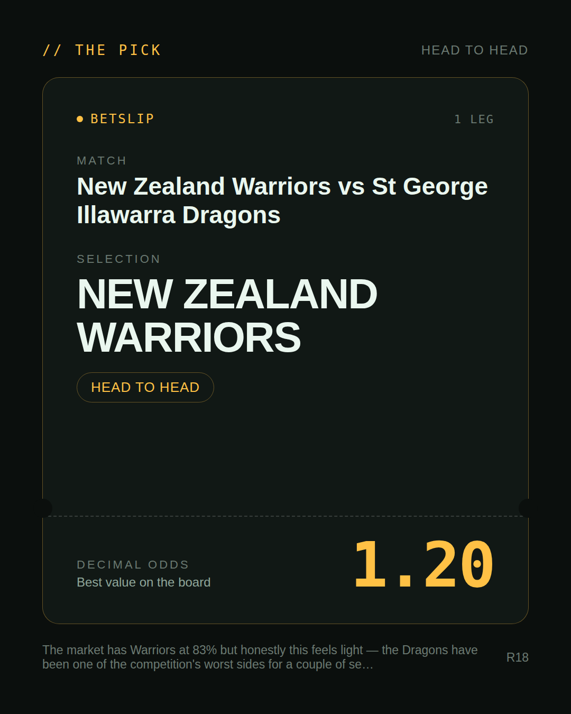
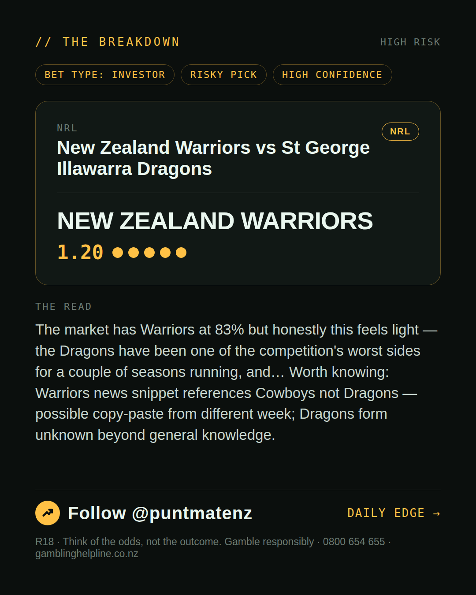
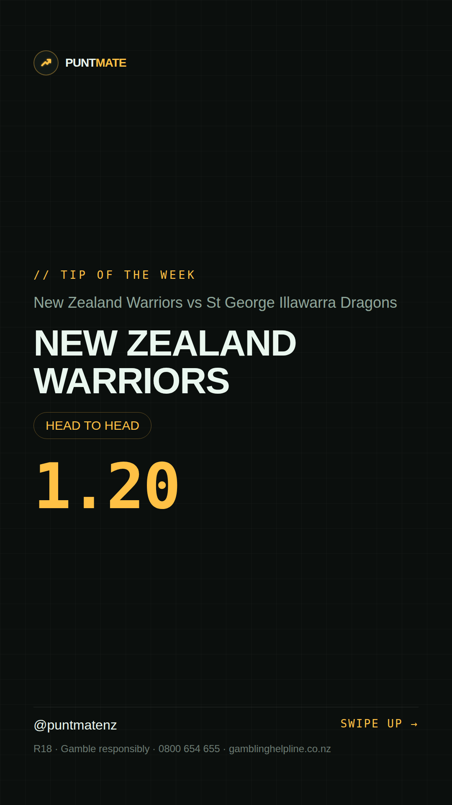

*🎯 PUNTMATE NZ — NRL* 🏟 New Zealand Warriors vs St George Illawarra Dragons *PICK:* NEW ZEALAND WARRIORS *ODDS:* 1.20 (Head to Head) *BET TYPE: INVESTOR* _The market has Warriors at 83% but honestly this feels light — the Dragons have been one of the competition's worst sides for a couple of seasons running, and… Worth knowing: Warriors news snippet references Cowboys not Dragons — possible copy-paste from different week; Dragons form unknown beyond general knowledge._ Keep this one light — the value's there but so is the uncertainty. ────────────────── 📲 Join Telegram for daily picks R18 · Gamble responsibly · Problem Gambling Foundation NZ: 0800 664 262
🎯 NRL — New Zealand Warriors vs St George Illawarra Dragons NEW ZEALAND WARRIORS @ 1.20 (Head to Head) BET TYPE: INVESTOR This one's about as close to a sure thing as sport gets — the numbers stack up and the price still pays. The market has Warriors at 83% but honestly this feels light — the Dragons have been one of the competition's worst sides for a couple of seasons running, and… Keep this one light — the value's there but so is the uncertainty. Follow for daily value picks → @puntmatenz Problem Gambling Foundation NZ: 0800 664 262 #PuntmateNZ #SportsBetting #NZTAB #NRL
| has_pick | True |
| pick_id | 2026-07-17_New_Zealand_Warriors_vs_St_George_Illawarra_Dragons |
| run_id | 29575927009 |
| generated_at | 2026-07-17T11:11:04.553280+00:00 |
| post_date | 2026-07-17 |
| match | New Zealand Warriors vs St George Illawarra Dragons |
| sport | rugbyleague_nrl |
| sport_label | NRL |
| market | Head to Head |
| selection | NEW ZEALAND WARRIORS |
| odds | 1.20 |
| bet_type | INVESTOR_BET |
| bet_type_label | BET TYPE: INVESTOR |
| bet_type_reason | This one's about as close to a sure thing as sport gets — the numbers stack up and the price still pays. The market has Warriors at 83% but honestly this feels light — the Dragons have been one of the competition's worst sides for a couple of seasons running, and… |
| classification | RISKY_PICK |
| risk | RISKY_PICK |
| confidence | HIGH |
| confidence_label | HIGH |
| final_explanation | The market has Warriors at 83% but honestly this feels light — the Dragons have been one of the competition's worst sides for a couple of seasons running, and… Worth knowing: Warriors news snippet references Cowboys not Dragons — possible copy-paste from different week; Dragons form unknown beyond general knowledge. |
| public_caution | Keep this one light — the value's there but so is the uncertainty. |
| theme | night |
| carousel_paths | ['data/review/2026-07-17_New_Zealand_Warriors_vs_St_George_Illawarra_Dragons/cover.png', 'data/review/2026-07-17_New_Zealand_Warriors_vs_St_George_Illawarra_Dragons/tip.png', 'data/review/2026-07-17_New_Zealand_Warriors_vs_St_George_Illawarra_Dragons/breakdown.png'] |
| carousel_urls | ['https://raw.githubusercontent.com/kingofthecastle24/puntmate/main/data/cards/2026-07-17_New_Zealand_Warriors_vs_St_George_Illawarra_Dragons_night_1_cover.png', 'https://raw.githubusercontent.com/kingofthecastle24/puntmate/main/data/cards/2026-07-17_New_Zealand_Warriors_vs_St_George_Illawarra_Dragons_night_2_tip.png', 'https://raw.githubusercontent.com/kingofthecastle24/puntmate/main/data/cards/2026-07-17_New_Zealand_Warriors_vs_St_George_Illawarra_Dragons_night_3_breakdown.png'] |
| story_path | data/review/2026-07-17_New_Zealand_Warriors_vs_St_George_Illawarra_Dragons/story.png |
| story_url | https://raw.githubusercontent.com/kingofthecastle24/puntmate/main/data/cards/2026-07-17_New_Zealand_Warriors_vs_St_George_Illawarra_Dragons_night_story.png |
| intended_platforms | ['telegram', 'instagram_feed', 'instagram_story', 'facebook'] |
| workflow_state | GENERATED |